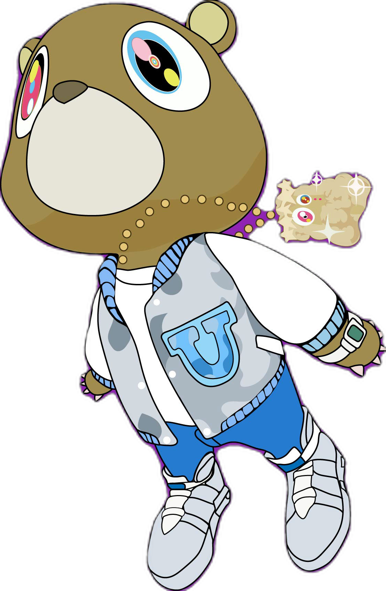

Kanye West, noto anche come Ye, è un rapper, produttore discografico e stilista statunitense. Nato ad Atlanta nel 1977 e cresciuto a Chicago, ha iniziato la sua carriera come produttore per Roc-A-Fella Records, lavorando con artisti di fama internazionale. È considerato uno degli artisti più influenti della musica contemporanea.
Il suo album di debutto The College Dropout (2004) ha rivoluzionato l'hip-hop, introducendo sonorità soul e testi introspettivi. Negli anni successivi ha pubblicato album innovativi come Graduation e My Beautiful Dark Twisted Fantasy, consolidando il suo ruolo nella cultura pop globale.
| Anno | Evento | Categoria |
|---|---|---|
| 2004 | Pubblicazione di "The College Dropout" | Musica |
| 2015 | Lancio del brand Yeezy | Moda |
| 2021 | Pubblicazione di "Donda" | Musica |